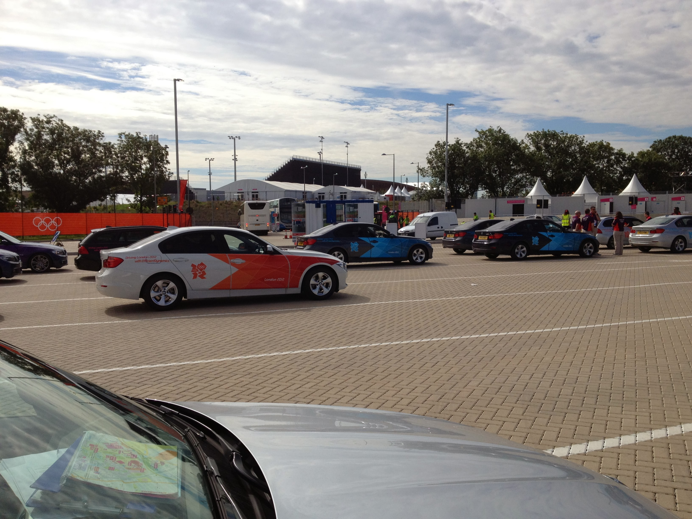

Shift Four C330 Automatic car. Spare Gold but part of Red Team.
Wednesday 25th July 2012
At Tube for 7.00am. Plenty of room to park. Gentle stroll to the FDO and 8.10am check in for 8.30am-6.30pm
shift. Breakfast was sausage and scrambled egg roll with brown sauce. Went off to the garage and was on demand at Eton Manor by 9.00am. Lea
was on duty again but in Navy team on another frequency. I parked behind Kim Barrett, a London based deputy headmistress. The weather was
glorious, hot and sunny.
Business was not booming. One of the FDO schedulers had been let out of the portacabin to see what life is really like at the sharp end. He
told us projections had said demand would increase so there were 280 cars prepped and allocated in the morning wave. That meant a sudden
realisation that there were not enough cars left to prep for the afternoon wave. Some of the early shift were going to be called in early so
there would be sufficient cars. Some people were getting het up about the way cars were selected to join the pick up zone and others that we
hadn't been briefed that there were such areas as the pick up and drop off zones.

One female member of Red team on her 2nd shift demanded that someone drive her to Eton Manor as she didn't know the way. She refused to
follow anyone. Pink team were asked to relocate to Curzon Street. Later one of them who hadn't gone requested a break and was sent back to
the FDO which triggered complaints from those on Curzon Street who had nowhere to go for a break, that not everyone had followed instructions.
Some of Red team were sent to the T3 staging area at St. Pancras. Kim and I decided that we were glad we wern't going to spend the day at the
back of the ground floor of an NCP car park. Lea was sent to the Olympic village. The number of cars gradually reduced. Eventualy Kim and I
were in the pick up zone and chatting to the Transport team guys taking advantage of their chairs.
Kim was asked to move to make way for the buses bringing the kids to the opening ceremony dress rehearsal. This meant she lost her place in
the queue so she bailed out and finished her shift early. I stuck it out and 6 and a bit hours after the start of my shift was rewarded
with a client from the IOC wanting to go to the Hilton Park Lane. He sat in the back and played with his blackberry/iphone the whole of the
journey not saying a word sat in the "seat of honour". He did thank me on arrival and gave me an unopened bottle of water.
Made my way to the back of Curzon St staging. Control then told me that my client thought he had left his wallet in my car. It was sitting
on the back seat. Was told a few minutes later to give it back to him. Decided that was best done on foot as stopping on Park Lane would be
a nightmare in the car. As I was passing the T3 load zone a transport type said "Are you C330" and standing next to him was the walletless
client. He thanked me profusely for bringing the wallet back to him personally. Once it reaached 5pm I asked control if I could come back to
the FDO for the end of my shift and had the great pleasure of driving back in the operational Games Lanes. Park Lane, Hyde Park Corner,
Constitution Hill, round the Victoria monument, across the front of Buck House, Birdcage Walk, Parliament Square, Victoria Embankment, The
Tower and Tower Bridge were all on the route back. I only went the wrong way once because I was in the wrong lane but easily corrected myself
as I knew where I was from my trip to ExCel.
Stratford station was a nightmare as the dress rehearsal was on but got back to the hotel at 7.30pm and had a lovely lamb curry. Phone in
room still not fixed so forced them to set up a phone in a conference room next to reception so I could get Mum to ring me back and talk to
her in private.